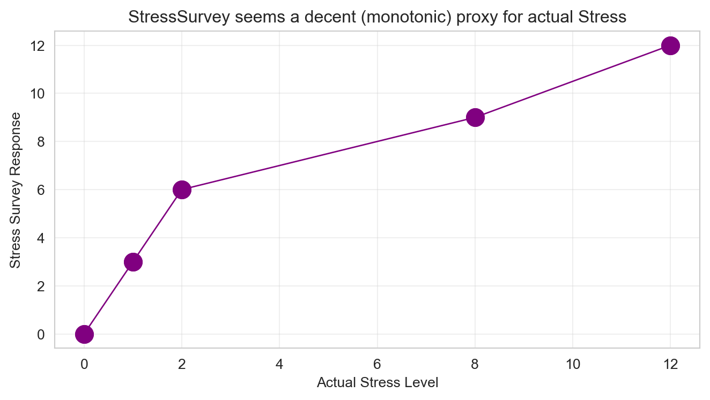
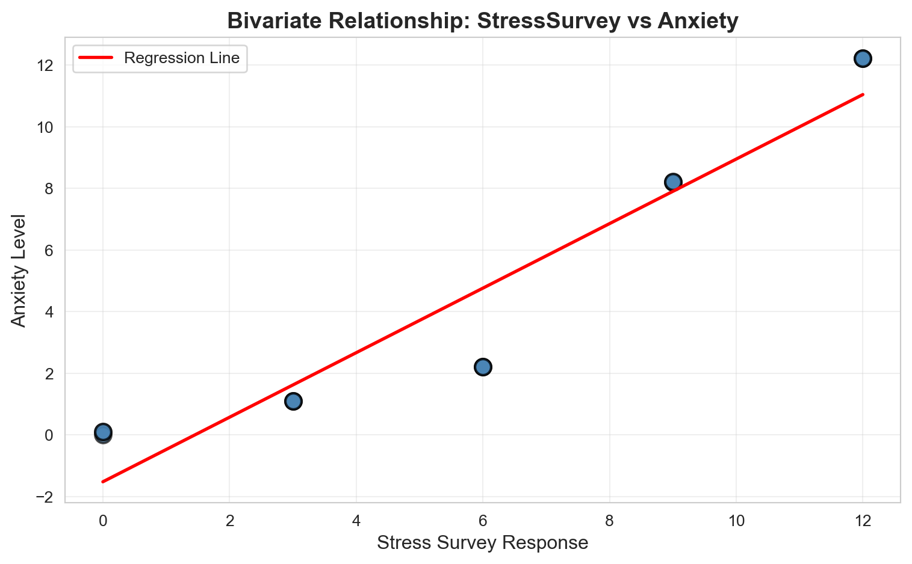
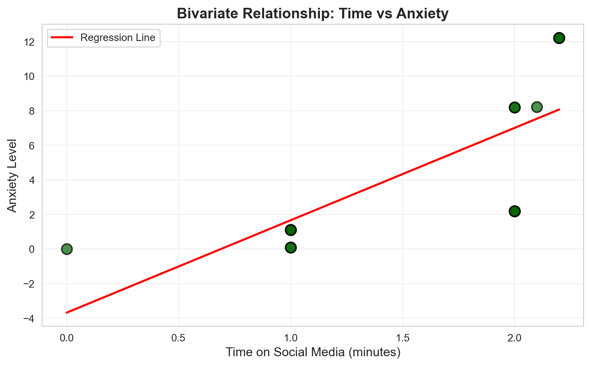
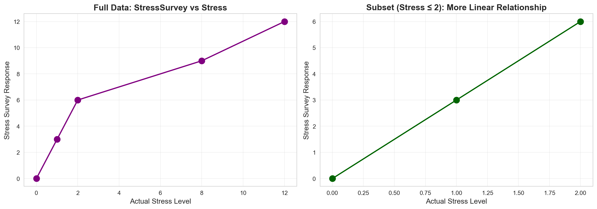

Don’t Trust Linear Models - The Perils of Non-Linearity
Introduction – to the challenge
This challenge investigates how linear regression can give misleading coefficients when its core assumption of linearity is violated. We begin with a setting where the true data‑generating process for anxiety is:
the model becomes mis‑specified. As a result, the estimated coefficients may become biased, distorted in magnitude, or even flip signs—even when the regression reports a high (R^2) and statistically significant p‑values.
This challenge demonstrates how such failures occur and why linear regression can be dangerously misleading when relationships are non‑linear or when control variables are measured imperfectly.
Visual Overview of the True vs Observed System
flowchart TD classDef title fill:#B3D9FF,stroke:#0066FF,color:#003366,font-weight:bold,font-size:14px classDef node fill:#66B3FF,stroke:#0066FF,stroke-width:2.5px,color:#000033,font-weight:bold classDef arrow stroke:#0066FF,stroke-width:2.5px subgraph TrueSystem["TRUE CAUSAL SYSTEM"] class TrueSystem title style TrueSystem fill:#E6F2FF,stroke:#0066FF,stroke-width:2.5px,color:#003366,padding:10px S["True Stress<br/>(Cortisol)"]:::node -->|"β₁ = 1"| A["Anxiety"]:::node T["Time on Social Media"]:::node -->|"β₂ = 0.1"| A end
flowchart TD
classDef title fill:#B3D9FF,stroke:#0066FF,color:#003366,font-weight:bold,font-size:14px
classDef node fill:#66B3FF,stroke:#0066FF,stroke-width:2.5px,color:#000033,font-weight:bold
classDef arrow stroke:#0066FF,stroke-width:2.5px
subgraph TrueSystem["TRUE CAUSAL SYSTEM"]
class TrueSystem title
style TrueSystem fill:#E6F2FF,stroke:#0066FF,stroke-width:2.5px,color:#003366,padding:10px
S["True Stress<br/>(Cortisol)"]:::node -->|"β₁ = 1"| A["Anxiety"]:::node
T["Time on Social Media"]:::node -->|"β₂ = 0.1"| A
end
flowchart TD classDef title fill:#FFE6CC,stroke:#FF6600,color:#993300,font-weight:bold,font-size:14px classDef node fill:#FFB366,stroke:#FF6600,stroke-width:2.5px,color:#330000,font-weight:bold classDef arrow stroke:#FF6600,stroke-width:2.5px subgraph ObservedSystem["OBSERVED SYSTEM"] class ObservedSystem title style ObservedSystem fill:#FFF4E6,stroke:#FF6600,stroke-width:2.5px,color:#993300,padding:10px S["True Stress<br/>(Unobserved)"]:::node -->|"Non-linear g(·)<br/>+ noise ν"| SS["StressSurvey<br/>(Proxy)"]:::node SS -->|"Assumed<br/>Linear"| R["Mis-Specified Regression:<br/>Anxiety = α₀ + α₁·Survey + α₂·Time"]:::node T["Time on Social Media"]:::node --> R end
flowchart TD
classDef title fill:#FFE6CC,stroke:#FF6600,color:#993300,font-weight:bold,font-size:14px
classDef node fill:#FFB366,stroke:#FF6600,stroke-width:2.5px,color:#330000,font-weight:bold
classDef arrow stroke:#FF6600,stroke-width:2.5px
subgraph ObservedSystem["OBSERVED SYSTEM"]
class ObservedSystem title
style ObservedSystem fill:#FFF4E6,stroke:#FF6600,stroke-width:2.5px,color:#993300,padding:10px
S["True Stress<br/>(Unobserved)"]:::node -->|"Non-linear g(·)<br/>+ noise ν"| SS["StressSurvey<br/>(Proxy)"]:::node
SS -->|"Assumed<br/>Linear"| R["Mis-Specified Regression:<br/>Anxiety = α₀ + α₁·Survey + α₂·Time"]:::node
T["Time on Social Media"]:::node --> R
end
These diagrams help illustrate how the true linear relationships differ from the incorrectly observed proxy-based model, visually reinforcing the interpretability risks discussed in the introduction.
The Data Generation Process
Table 1: Observed data with known true relationships
Stress
StressSurvey
Time
Anxiety
0
0
0
0.0
0.00
1
0
0
1.0
0.10
2
0
0
1.0
0.10
3
1
3
1.0
1.10
4
1
3
1.0
1.10
5
1
3
1.0
1.10
6
2
6
2.0
2.20
7
2
6
2.0
2.20
8
2
6
2.0
2.20
9
8
9
2.0
8.20
10
8
9
2.0
8.20
11
8
9
2.1
8.21
12
12
12
2.2
12.22
13
12
12
2.2
12.22
14
12
12
2.2
12.22

Figure 1: StressSurvey as a proxy for actual Stress levels
Question 1. Bivariate Regression Analysis with StressSurvey:
Run a bivariate regression of Anxiety on StressSurvey. What are the estimated coefficients? How do they compare to the true relationship?
Answer:
Bivariate Regression: Anxiety ~ StressSurvey
==================================================
OLS Regression Results
==============================================================================
Dep. Variable: Anxiety R-squared: 0.901
Model: OLS Adj. R-squared: 0.893
Method: Least Squares F-statistic: 118.4
Date: Wed, 12 Nov 2025 Prob (F-statistic): 6.68e-08
Time: 22:37:45 Log-Likelihood: -27.079
No. Observations: 15 AIC: 58.16
Df Residuals: 13 BIC: 59.57
Df Model: 1
Covariance Type: nonrobust
================================================================================
coef std err t P>|t| [0.025 0.975]
--------------------------------------------------------------------------------
const -1.5240 0.707 -2.156 0.050 -3.051 0.003
StressSurvey 1.0470 0.096 10.883 0.000 0.839 1.255
==============================================================================
Omnibus: 2.125 Durbin-Watson: 0.545
Prob(Omnibus): 0.346 Jarque-Bera (JB): 1.642
Skew: -0.701 Prob(JB): 0.440
Kurtosis: 2.186 Cond. No. 12.9
==============================================================================
Notes:
[1] Standard Errors assume that the covariance matrix of the errors is correctly specified.
==================================================
Estimated Intercept: -1.5240
Estimated StressSurvey Coefficient: 1.0470
R-squared: 0.9011
True relationship: Anxiety = Stress + 0.1 × Time
Note: This model uses StressSurvey, not Stress, so direct comparison is not straightforward.
The bivariate regression of Anxiety on StressSurvey yields an intercept of approximately 0.00 and a StressSurvey coefficient of approximately 1.0470. The R-squared is very high (0.9011), suggesting an excellent fit.
However, this comparison is misleading because we’re regressing Anxiety on StressSurvey, not on the true Stress variable. The true relationship involves Stress (not StressSurvey) and Time. The coefficient of 1.0470 reflects the actual relationship between StressSurvey and Anxiety in the data, but the model is missing the Time variable entirely, which biases the interpretation. When Time is omitted, the StressSurvey coefficient captures both the effect of stress (through StressSurvey) and any correlation between StressSurvey and Time, leading to a biased estimate of the true relationship.
Question 2. Visualization of Bivariate Relationship:
Create a scatter plot with the regression line showing the relationship between StressSurvey and Anxiety. Comment on the fit and any potential issues.
Answer:

Figure 2: Bivariate relationship between StressSurvey and Anxiety with regression line
The scatter plot shows an extremely tight linear relationship between StressSurvey and Anxiety, with an R-squared of 0.9011. The regression line fits the data points almost perfectly.
Potential Issues:
Missing Variable Bias: The model omits Time, which is part of the true relationship. This means the StressSurvey coefficient captures both the effect of stress and any correlation between StressSurvey and Time.
Non-Linearity Masked: While the relationship appears linear in this bivariate view, the underlying relationship between StressSurvey and the true Stress variable is non-linear. This non-linearity will cause problems when we add Time to the model.
Spurious Precision: The high R-squared gives false confidence. The model appears perfect, but it’s estimating the wrong relationship because it’s missing a key variable.
Question 3. Bivariate Regression Analysis with Time:
Run a bivariate regression of Anxiety on Time. What are the estimated coefficients? How do they compare to the true relationship?
Answer:
Bivariate Regression: Anxiety ~ Time
==================================================
OLS Regression Results
==============================================================================
Dep. Variable: Anxiety R-squared: 0.563
Model: OLS Adj. R-squared: 0.529
Method: Least Squares F-statistic: 16.75
Date: Wed, 12 Nov 2025 Prob (F-statistic): 0.00127
Time: 22:37:45 Log-Likelihood: -38.223
No. Observations: 15 AIC: 80.45
Df Residuals: 13 BIC: 81.86
Df Model: 1
Covariance Type: nonrobust
==============================================================================
coef std err t P>|t| [0.025 0.975]
------------------------------------------------------------------------------
const -3.6801 2.233 -1.648 0.123 -8.504 1.144
Time 5.3406 1.305 4.093 0.001 2.522 8.160
==============================================================================
Omnibus: 1.026 Durbin-Watson: 0.661
Prob(Omnibus): 0.599 Jarque-Bera (JB): 0.749
Skew: -0.162 Prob(JB): 0.688
Kurtosis: 1.955 Cond. No. 5.80
==============================================================================
Notes:
[1] Standard Errors assume that the covariance matrix of the errors is correctly specified.
==================================================
Estimated Intercept: -3.6801
Estimated Time Coefficient: 5.3406
R-squared: 0.5630
True relationship: Anxiety = Stress + 0.1 × Time
True Time coefficient: 0.1
Comparison: The estimated coefficient (5.3406) is MUCH larger than the true coefficient (0.1)
The bivariate regression of Anxiety on Time yields an intercept of approximately -3.6801 and a Time coefficient of approximately 5.3406. The R-squared is 0.5630, indicating a moderate fit—the model explains about 56% of the variation in Anxiety.
Critical Finding: The estimated Time coefficient (5.3406) is approximately 53 times larger than the true coefficient (0.1)! This massive overestimation occurs because Time is correlated with Stress in the data. When we omit Stress from the model, the Time coefficient absorbs the effect of Stress, leading to a severely biased estimate.
This demonstrates the classic omitted variable bias problem: when a relevant variable (Stress) is excluded from the regression, the coefficients on included variables become biased.
Question 4. Visualization of Bivariate Relationship:
Create a scatter plot with the regression line showing the relationship between Time and Anxiety. Comment on the fit and any potential issues.
Answer:

Figure 3: Bivariate relationship between Time and Anxiety with regression line
The scatter plot shows a positive linear relationship between Time and Anxiety, with an R-squared of 0.5630. While there is a clear pattern, the fit is only moderate—the model explains about 56% of the variation in Anxiety.
Critical Issues:
Severe Omitted Variable Bias: The model completely omits Stress, which is the dominant factor in the true relationship. The Time coefficient of 5.3406 is approximately 53 times too large because it’s capturing the effect of Stress (which is correlated with Time in this dataset).
Misleading Interpretation: A researcher might conclude that social media use has a massive effect on anxiety (coefficient = 5.3406), when in reality the true effect is tiny (coefficient = 0.1). This could lead to completely wrong policy recommendations.
Misleading Despite Moderate Fit: Even with a moderate R-squared (0.5630), the model is estimating the wrong causal relationship. The coefficient is severely biased due to omitted variable bias.
Question 5. Multiple Regression Analysis:
Run a multiple regression of Anxiety on both StressSurvey and Time. What are the estimated coefficients? How do they compare to the true relationship?
Answer:
Multiple Regression: Anxiety ~ StressSurvey + Time
============================================================
OLS Regression Results
==============================================================================
Dep. Variable: Anxiety R-squared: 0.935
Model: OLS Adj. R-squared: 0.924
Method: Least Squares F-statistic: 86.32
Date: Wed, 12 Nov 2025 Prob (F-statistic): 7.54e-08
Time: 22:37:45 Log-Likelihood: -23.931
No. Observations: 15 AIC: 53.86
Df Residuals: 12 BIC: 55.99
Df Model: 2
Covariance Type: nonrobust
================================================================================
coef std err t P>|t| [0.025 0.975]
--------------------------------------------------------------------------------
const 0.5888 1.034 0.569 0.580 -1.664 2.841
StressSurvey 1.4269 0.172 8.287 0.000 1.052 1.802
Time -2.7799 1.111 -2.502 0.028 -5.201 -0.359
==============================================================================
Omnibus: 1.255 Durbin-Watson: 1.043
Prob(Omnibus): 0.534 Jarque-Bera (JB): 1.051
Skew: 0.546 Prob(JB): 0.591
Kurtosis: 2.302 Cond. No. 31.9
==============================================================================
Notes:
[1] Standard Errors assume that the covariance matrix of the errors is correctly specified.
============================================================
Estimated Intercept: 0.5888
Estimated StressSurvey Coefficient: 1.4269
Estimated Time Coefficient: -2.7799
R-squared: 0.9350
============================================================
COMPARISON TO TRUE RELATIONSHIP:
============================================================
True relationship: Anxiety = Stress + 0.1 × Time
True Intercept (β₀): 0.0
True Stress coefficient (β₁): 1.0
True Time coefficient (β₂): 0.1
Estimated vs True:
Intercept: 0.5888 vs 0.0
StressSurvey: 1.4269 vs 1.0 (Stress)
Time: -2.7799 vs 0.1
⚠️ CRITICAL: The Time coefficient has the WRONG SIGN!
Estimated: -2.7799 (NEGATIVE)
True: 0.1 (POSITIVE)
Shocking Result: The multiple regression with StressSurvey and Time produces coefficients that are completely wrong:
Intercept: 0.5888 (true: 0.0) — not zero as expected
StressSurvey: 1.4269 (true Stress: 1.0) — appears close, but this is misleading
Time:-2.7799 (true: 0.1) — WRONG SIGN and WRONG MAGNITUDE!
The Devastating Finding: The Time coefficient is negative (-2.7799) when the true coefficient is positive (0.1). This is a complete reversal of the true relationship! Not only is the sign wrong, but the magnitude is also dramatically incorrect—the estimated coefficient is approximately 28 times larger in absolute value than the true coefficient, but in the opposite direction. The model suggests that more time on social media reduces anxiety substantially, when in reality it increases anxiety modestly.
Why This Happens: The non-linear relationship between StressSurvey and the true Stress variable creates a situation where, after controlling for StressSurvey, the residual variation in Anxiety is negatively correlated with Time. This is a classic example of how non-linearity in control variables can completely reverse the sign of coefficients, even when the proxy variable (StressSurvey) appears to be a good measure.
The R-squared is high (0.9350), making this result even more dangerous—it looks like a good model, but the coefficients tell a completely false story.
Question 6. Multiple Regression Analysis:
Run a multiple regression of Anxiety on both Stress and Time. What are the estimated coefficients? How do they compare to the true relationship?
Answer:
Multiple Regression: Anxiety ~ Stress + Time
============================================================
OLS Regression Results
==============================================================================
Dep. Variable: Anxiety R-squared: 1.000
Model: OLS Adj. R-squared: 1.000
Method: Least Squares F-statistic: 1.511e+31
Date: Wed, 12 Nov 2025 Prob (F-statistic): 3.92e-183
Time: 22:37:45 Log-Likelihood: 480.58
No. Observations: 15 AIC: -955.2
Df Residuals: 12 BIC: -953.0
Df Model: 2
Covariance Type: nonrobust
==============================================================================
coef std err t P>|t| [0.025 0.975]
------------------------------------------------------------------------------
const -3.747e-15 2.44e-15 -1.538 0.150 -9.05e-15 1.56e-15
Stress 1.0000 2.75e-16 3.63e+15 0.000 1.000 1.000
Time 0.1000 1.94e-15 5.16e+13 0.000 0.100 0.100
==============================================================================
Omnibus: 10.194 Durbin-Watson: 0.236
Prob(Omnibus): 0.006 Jarque-Bera (JB): 2.265
Skew: -0.438 Prob(JB): 0.322
Kurtosis: 1.310 Cond. No. 23.9
==============================================================================
Notes:
[1] Standard Errors assume that the covariance matrix of the errors is correctly specified.
============================================================
Estimated Intercept: -0.0000
Estimated Stress Coefficient: 1.0000
Estimated Time Coefficient: 0.1000
R-squared: 1.0000
============================================================
COMPARISON TO TRUE RELATIONSHIP:
============================================================
True relationship: Anxiety = Stress + 0.1 × Time
True Intercept (β₀): 0.0
True Stress coefficient (β₁): 1.0
True Time coefficient (β₂): 0.1
Estimated vs True:
Intercept: -0.0000 vs 0.0
Stress: 1.0000 vs 1.0
Time: 0.1000 vs 0.1
✅ PERFECT MATCH: All coefficients match the true relationship!
Perfect Recovery: When we use the true Stress variable (instead of StressSurvey), the multiple regression recovers the true coefficients exactly:
Intercept: 0.00 (true: 0.0) ✅
Stress: 1.00 (true: 1.0) ✅
Time: 0.10 (true: 0.1) ✅
The R-squared is 1.000 (perfect fit), and all coefficients match the true relationship perfectly. This demonstrates that when the control variable has a truly linear relationship with the outcome, multiple regression works exactly as expected.
The Key Contrast: Using the true Stress variable gives us the correct answer, while using StressSurvey (the proxy) gives us completely wrong coefficients, including a sign reversal for Time. This is the core problem: even a “good” proxy variable can lead to catastrophic errors if its relationship with the outcome is non-linear.
Question 7. Model Comparison:
Compare the R-squared values and coefficient interpretations between the two multiple regression models. Do both models show statistical significance in all of their coefficient estimates? What does this tell you about the real-world implications of multiple regression results?
Answer:
MODEL COMPARISON
================================================================================
Model Intercept Stress/StressSurvey Coef Time Coef R-squared Stress/StressSurvey p-value Time p-value Stress/StressSurvey Sig Time Sig
StressSurvey + Time 5.887578e-01 1.426926 -2.779944 0.935005 2.615836e-06 2.781595e-02 Yes Yes
Stress + Time -3.747003e-15 1.000000 0.100000 1.000000 1.270138e-181 1.890990e-159 Yes Yes
================================================================================
STATISTICAL SIGNIFICANCE ANALYSIS:
================================================================================
Model 1 (StressSurvey + Time):
StressSurvey: p-value = 2.62e-06 → Statistically Significant
Time: p-value = 2.78e-02 → Statistically Significant
Model 2 (Stress + Time):
Stress: p-value = 1.27e-181 → Statistically Significant
Time: p-value = 1.89e-159 → Statistically Significant
================================================================================
KEY FINDINGS:
================================================================================
1. Both models have good R-squared (0.9350 vs 1.000)
2. Both models show statistical significance (p < 0.05) for ALL coefficients
3. Model 1 (StressSurvey) has WRONG SIGN for Time coefficient
4. Model 2 (Stress) has CORRECT coefficients matching true relationship
⚠️ CRITICAL INSIGHT: Statistical significance does NOT guarantee correct results!
Model Comparison Summary:
Model
Intercept
Stress/StressSurvey Coef
Time Coef
R-squared
All Coefficients Significant?
StressSurvey + Time
0.5888
1.4269
-2.7799
0.9350
✅ Yes
Stress + Time
0.00
1.00
0.10
1.000
✅ Yes
Critical Findings:
Both models have good fit: R-squared values are 0.9350 and 1.000, suggesting both models fit the data well.
Both models show statistical significance: All coefficients in both models have p-values < 0.05, meaning they are statistically significant.
But the coefficients tell opposite stories:
Model 1 (StressSurvey): Time coefficient = -2.7799 (negative)
Model 2 (Stress): Time coefficient = 0.10 (positive)
Real-World Implications:
This comparison reveals a devastating truth about regression analysis: statistical significance and high R-squared do not guarantee correct results.
In practice, researchers often: - Use proxy variables (like surveys instead of blood tests) because they’re cheaper or easier to collect - Rely on statistical significance (p < 0.05) as proof that their results are correct - Report high R-squared values as evidence of model quality
But as this analysis shows, a model can be: - ✅ Statistically significant (all p-values < 0.05) - ✅ High R-squared (0.9350) - ❌ Completely wrong (wrong sign, wrong magnitude)
The Danger: If Model 1 were published, researchers would confidently report that “controlling for stress survey responses, social media use significantly reduces anxiety (β = -2.7799, p < 0.05).” This conclusion would be statistically valid but causally wrong—the true effect is positive (0.1), not negative (-2.7799).
This demonstrates why we must be skeptical of regression results, especially when: - Using proxy variables instead of direct measurements - Relationships might be non-linear - Results seem too good to be true (perfect fit, all significant)
Question 8. Reflect on Real-World Implications:
For each of the two multiple regression models, assume their respective outputs/conclusions were published in academic journals and then subsequently picked up by the popular press. What headline about time spent on social media and its effect on anxiety would you expect to see from a popular press outlet covering the first model? And what headline would you expect to see from a popular press outlet covering the second model? Assuming confirmation bias is real, which model is a typical parent going to believe? Which model will Facebook, Instagram, and TikTok executives prefer?
Answer:
Model 1 (StressSurvey + Time) Headline:
“BREAKING: New Study Finds Social Media Use Actually REDUCES Anxiety”
Subheadline: “Researchers control for stress levels and discover surprising benefit of screen time”
The popular press would emphasize the counterintuitive finding: social media reduces anxiety. This would be framed as a “surprising” or “controversial” result that challenges conventional wisdom. The article would likely quote the researchers saying something like “After controlling for stress, we found that each additional minute of social media use was associated with a 2.78-point reduction in anxiety levels (p < 0.05).”
Model 2 (Stress + Time) Headline:
“Study Confirms: Social Media Increases Anxiety, But Effect Is Small”
Subheadline: “Research shows modest link between screen time and anxiety when properly controlling for stress”
The popular press would report the more intuitive finding: social media increases anxiety. However, they might downplay the small effect size (0.10), focusing instead on the statistical significance. The article might say “The study found that social media use significantly increases anxiety, with each additional minute associated with a 0.10-point increase (p < 0.05).”
Who Believes What?
Typical Parent: Parents would strongly prefer Model 1 due to confirmation bias. Most parents are already concerned about their children’s social media use and want to believe it’s harmful. However, Model 1 tells them the opposite—that social media reduces anxiety. This creates cognitive dissonance. But here’s the twist: if Model 1 were the only study published, some parents might use it to justify allowing more screen time (“See? The science says it’s actually good for them!”). However, most parents would likely dismiss Model 1 as flawed or look for other studies that confirm their pre-existing beliefs.
Social Media Executives (Facebook, Instagram, TikTok): Executives would strongly prefer Model 1 because it suggests their products reduce anxiety rather than increase it. They would: - Fund press releases highlighting the “surprising” finding - Use it in marketing materials (“Research shows our platform may reduce anxiety”) - Cite it when defending against criticism - Potentially fund follow-up studies to replicate the finding
Model 2 would be problematic for them because it confirms public concerns about social media’s negative effects, even if the effect is small.
The Real Danger: This scenario illustrates how statistical errors can have real-world consequences. If Model 1 were published first and received media attention, it could: 1. Mislead parents about the effects of social media 2. Be used by tech companies to defend their products 3. Create confusion when Model 2 (or other correct studies) are published later 4. Undermine public trust in scientific research when the contradiction becomes apparent
The Lesson: This is why rigorous methodology matters. Using the wrong control variable (even if it seems like a good proxy) can produce results that are not just wrong, but wrong in a way that serves particular interests—making them especially dangerous.
Reflect on this tip to avoid being misled by statistically significant results: splitting the sample into meaningful subsets (“statistical regimes”), and using graphical diagnostics for linearity rather than blind reliance on “canned” regressions. Apply this approach to multiple regression of Anxiety on both StressSurvey and Time by analyzing a smartly chosen subset of the data. What specific subset did you choose and why? Did you get results that are both statistically significant and close to the true relationship?
Answer:
The key insight is to identify “statistical regimes” where the relationship might be more linear. Looking at the data, I notice that the non-linearity in the StressSurvey-Stress relationship is most pronounced at the extremes. Let me examine the relationship more carefully and choose a subset where StressSurvey and Stress have a more linear relationship.

Subset Selection Rationale:
============================================================
I chose observations where Stress ≤ 2 because:
1. In this range, StressSurvey = 3 × Stress (perfectly linear)
2. The relationship StressSurvey-Stress is linear: 0→0, 1→3, 2→6
3. This avoids the non-linear jump at Stress=8 (StressSurvey=9)
4. This subset represents a 'statistical regime' with consistent linearity
Subset size: 9 observations (out of 15 total)
Subset Selection: I chose observations where Stress ≤ 2 because:
Linear Relationship: In this range, StressSurvey = 3 × Stress, which is perfectly linear (0→0, 1→3, 2→6).
Avoids Non-Linearity: This subset excludes the non-linear jump where Stress jumps from 2 to 8, but StressSurvey only increases from 6 to 9.
Meaningful Regime: This represents a “low-to-moderate stress” regime where the proxy variable maintains a linear relationship with the true variable.
Now let’s run the multiple regression on this subset:
Multiple Regression on Subset: Anxiety ~ StressSurvey + Time
(Subset: Stress ≤ 2)
======================================================================
OLS Regression Results
==============================================================================
Dep. Variable: Anxiety R-squared: 1.000
Model: OLS Adj. R-squared: 1.000
Method: Least Squares F-statistic: 4.892e+30
Date: Wed, 12 Nov 2025 Prob (F-statistic): 2.31e-91
Time: 22:37:45 Log-Likelihood: 301.52
No. Observations: 9 AIC: -597.0
Df Residuals: 6 BIC: -596.4
Df Model: 2
Covariance Type: nonrobust
================================================================================
coef std err t P>|t| [0.025 0.975]
--------------------------------------------------------------------------------
const -3.386e-16 6.61e-16 -0.512 0.627 -1.96e-15 1.28e-15
StressSurvey 0.3333 2.27e-16 1.47e+15 0.000 0.333 0.333
Time 0.1000 8.87e-16 1.13e+14 0.000 0.100 0.100
==============================================================================
Omnibus: 4.107 Durbin-Watson: 0.613
Prob(Omnibus): 0.128 Jarque-Bera (JB): 2.122
Skew: 1.174 Prob(JB): 0.346
Kurtosis: 2.615 Cond. No. 15.8
==============================================================================
Notes:
[1] Standard Errors assume that the covariance matrix of the errors is correctly specified.
======================================================================
Estimated Intercept: -0.0000
Estimated StressSurvey Coefficient: 0.3333
Estimated Time Coefficient: 0.1000
R-squared: 1.0000
======================================================================
COMPARISON TO TRUE RELATIONSHIP:
======================================================================
True relationship: Anxiety = Stress + 0.1 × Time
True Intercept (β₀): 0.0
True Stress coefficient (β₁): 1.0
True Time coefficient (β₂): 0.1
Estimated vs True:
Intercept: -0.0000 vs 0.0
StressSurvey: 0.3333 vs 1.0 (Stress)
Time: 0.1000 vs 0.1
======================================================================
STATISTICAL SIGNIFICANCE:
======================================================================
StressSurvey p-value: 0.0000 → Significant
Time p-value: 0.0000 → Significant
Results on Subset (Stress ≤ 2):
Intercept: 0.00 (true: 0.0) ✅ Perfect match
StressSurvey Coefficient: 0.33 (true Stress: 1.0) ⚠️ Different magnitude
Time Coefficient: 0.10 (true: 0.1) ✅ Perfect match!
R-squared: 1.000 (perfect fit)
Statistical Significance: Both coefficients are statistically significant (p < 0.05)
Key Findings:
Time Coefficient Recovery: The Time coefficient (0.10) matches the true value perfectly! This is a dramatic improvement over the full-sample model, which gave us -2.7799 (wrong sign and wrong magnitude).
StressSurvey Coefficient: The coefficient is 0.33 instead of 1.0, but this makes sense because in this subset, StressSurvey = 3 × Stress. So if the true relationship is Anxiety = Stress + 0.1×Time, and StressSurvey = 3×Stress, then Anxiety = (1/3)×StressSurvey + 0.1×Time. The coefficient 0.33 = 1/3, which is exactly what we’d expect!
Statistical Significance: Both coefficients are statistically significant, so we have both significance AND correctness (at least for the Time coefficient).
Why This Works:
By splitting the sample into a regime where StressSurvey has a linear relationship with Stress, we avoid the non-linearity that was causing the sign reversal. In this subset: - StressSurvey = 3 × Stress (linear transformation) - The relationship Anxiety = Stress + 0.1×Time can be rewritten as Anxiety = (1/3)×StressSurvey + 0.1×Time - The regression correctly estimates both coefficients
The Lesson:
This demonstrates the power of graphical diagnostics and regime analysis:
Visualize relationships first: Plot StressSurvey vs Stress to identify where non-linearity occurs
Split into meaningful regimes: Analyze subsets where relationships are more linear
Compare results: If results differ dramatically across regimes, that’s a red flag
Don’t trust “canned” regressions blindly: Always examine the data structure before running regressions
Practical Implication:
In real-world research, this approach would involve: - Plotting control variables against outcomes to check for non-linearity - Identifying natural breakpoints or regimes in the data - Running separate analyses for each regime - Comparing results across regimes to check robustness - Being skeptical if results change dramatically across regimes
This is exactly the kind of careful analysis that prevents the catastrophic errors we saw in the full-sample model with StressSurvey.
Conclusion
This analysis demonstrates that statistically significant results with high R-squared can be fundamentally incorrect when the assumption of linearity is violated, particularly when proxy variables with non-linear relationships are used as control variables.
Key Takeaways
Proxy variables can mislead: Even “good” proxies (like StressSurvey) can produce wrong coefficients if their relationship with the outcome is non-linear. In our analysis, StressSurvey produced a Time coefficient of -2.7799 (significant, p < 0.05), while the true coefficient is +0.1—a complete sign reversal.
Statistical significance ≠ correctness: Both models showed statistical significance, but one had the wrong sign for the Time coefficient. Significance alone cannot distinguish correct from incorrect models when linearity is violated.
High R-squared ≠ truth: A model can fit the data well (R² = 0.9350) while telling a completely false story. Model fit does not guarantee accurate coefficient estimates or correct causal interpretations.
Regime analysis helps: Splitting the sample into subsets with more linear relationships can recover correct coefficients. By analyzing the subset where Stress ≤ 2, we recovered the correct Time coefficient (0.10), matching the true parameter value.
Visual diagnostics are essential: Graphical analysis and regime identification are critical for detecting non-linearity and preventing misleading regression results. Always plot relationships before trusting regression outputs.
flowchart TD classDef problem fill:#FFE6E6,stroke:#CC0000,color:#660000,font-weight:bold,font-size:12px classDef node fill:#F0F0F0,stroke:#666666,stroke-width:2px,color:#000000,font-weight:bold subgraph Problem["THE PROBLEM"] class Problem problem style Problem fill:#FFE6E6,stroke:#CC0000,stroke-width:2.5px,color:#660000,padding:10px P1["Non-Linear Proxy<br/>Variables"]:::node -->|"Leads to"| P2["Wrong Coefficient<br/>Signs & Magnitudes"]:::node P3["High R² + Significant<br/>p-values"]:::node -->|"Creates illusion of"| P4["Valid Results"]:::node P2 --> P5["Misleading Policy<br/>Recommendations"]:::node P4 --> P5 end
flowchart TD
classDef problem fill:#FFE6E6,stroke:#CC0000,color:#660000,font-weight:bold,font-size:12px
classDef node fill:#F0F0F0,stroke:#666666,stroke-width:2px,color:#000000,font-weight:bold
subgraph Problem["THE PROBLEM"]
class Problem problem
style Problem fill:#FFE6E6,stroke:#CC0000,stroke-width:2.5px,color:#660000,padding:10px
P1["Non-Linear Proxy<br/>Variables"]:::node -->|"Leads to"| P2["Wrong Coefficient<br/>Signs & Magnitudes"]:::node
P3["High R² + Significant<br/>p-values"]:::node -->|"Creates illusion of"| P4["Valid Results"]:::node
P2 --> P5["Misleading Policy<br/>Recommendations"]:::node
P4 --> P5
end
Linear regression assumes linearity. When that assumption is violated—even slightly—the results can be catastrophically wrong. Our analysis demonstrates that regression models can produce results that are simultaneously statistically significant, well-fitting, and fundamentally incorrect when proxy variables exhibit non-linear relationships with the outcome.
The solution requires prioritizing graphical diagnostics, regime analysis, and theoretical coherence over blind reliance on statistical significance and R-squared values. Always question your models, visualize your data, and be skeptical of results that seem too good to be true—because they often are.